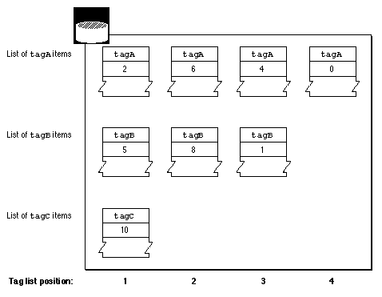

Methods of Identifying Collection Items
Many Collection Manager functions operate on an individual item within a collection. For example, the Collection Manager provides functions that allow you to replace the variable-length data for a particular item as well as functions that allow you to retrieve an item's variable-length data.When calling these Collection Manager functions, you need to specify which collection item you want to examine or edit. The Collection Manager provides three methods of specifying a particular item in a collection:
Figure 5-4 Items in a collection
- The collection tag and the collection ID. Together, these two properties uniquely identify an item in a collection. The collection IDs of collection items with the same collection tag do not have to be sequential. For example, the collection shown in Figure 5-4 has four items with the
'tagA'collection tag. These four items have collection IDs 2, 6, 4, and 0.- The collection tag and the tag list position. Each item in a collection has a tag list position as well as a collection ID. The tag list position of an item is the position of the item in the list of items with the same collection tag. Unlike a collection ID, the tag list positions of items with the same tag are sequential. For example, in Figure 5-4 the four items with the
'tagA'collection tag have tag list positions 1, 2, 3, and 4. Unlike the collection ID, the tag list position of an item can change if another item with the same collection tag is added to or removed from the collection.- The collection index. The Collection Manager assigns a collection index to each item in a collection. A collection index uniquely identifies its item within a collection. Indexes across a collection do not have to be sequential. The collection index of any item in a collection can change if another item is added to or removed from the collection.

In Figure 5-4, the third item in the second row can be identified in three ways:
For examples of identifying collection items, see "Adding Items to a Collection" beginning on page 5-17, "Determining the Collection Index of an Item" beginning on page 5-19, and "Determining the Tag and ID of an Item" beginning on page 5-21.
- It has a collection tag of
'tagB'and a collection ID of 1.- It has a collection tag of
'tagB'and a tag list position of 3.- It has a unique collection index assigned to it by the Collection Manager.